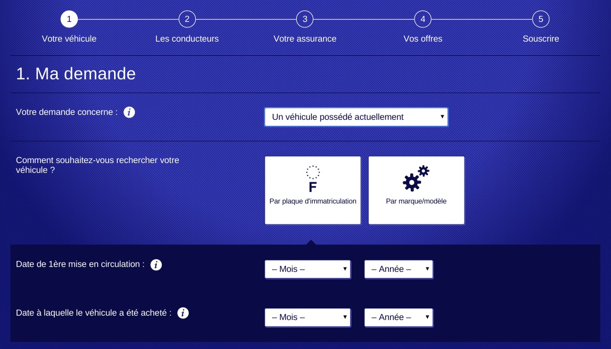

Un Formulaire
Une hierarchie entre les champs du formulaire
- Écran
- Bloc
- Groupe
- Champ


1er site indépendant de comparaison d’assurance, lancé en septembre 2012
Un lieu unique pour comparer rapidement des centaines d’offres (assurances auto, moto, MRH, santé et emprunteur)
Application WEB Java
Une hierarchie entre les champs du formulaire
Définition : Metamodel signifie littéralement modèle du modèle. Il peut être défini comme la représentation d'un point de vue particulier sur des modèles.
Une hierarchie entre les champs du formulaire
public enum EFieldAuto implements FieldID {
VEH_DTL_DEMANDE(LISTBOX, ...
public enum EGroupAuto implements GroupID {
GRP_VEH_IMMAT("GRP_VEH_IMMAT",
VEH_DTL_IMMAT_NUM,
VEH_DTL_IMMAT_SERVICE, ...
public enum EBlockAuto implements BlockID {
BLK_MA_DEMANDE("BLK_MA_DEMANDE",
VEH_DTL_DEMANDE,
VEH_DTL_CHOIX_RECHERCHE_VEHICULE, ...
public enum EScreenAuto implements ScreenID {
SCR_VEHICULE("Vehicule",
BLK_MA_DEMANDE,
BLK_UTILISATION_VEHICULE, ...
Adapter le code existant pour le futur outil
Integré l'outil au workflow de l'entreprise
public enum EFieldAuto implements FieldID{
VEH_DTL_DEMANDE(LISTBOX, "VEH_DTL_DEMANDE", TAG_QUESTION_HOMEPAGE), //
/**
* @see #SEC_SUPPRESSION
*/
VEH_DTL_SECOND(LISTBOX, "VEH_DTL_SECOND"), //
VEH_DTL_TITULAIRE(LISTBOX, "VEH_DTL_TITULAIRE"), //
Utilisé la generation de code
Generer les données sous forme d'un tableau d'élément
{ "data": { "label": "Votre véhicule", "id": "Vehicule", "type": "SCREEN" }, "group": "nodes" }
{
"data": {
"label": "Ma demande",
"id": "BLK_MA_DEMANDE",
"parent": "Vehicule",
"type": "BLOCK"
},
"group": "nodes"
},
{
"data": {
"id": "SEC_DON_ANEC_HIS_DATE_RETRAIT",
"source": "SEC_DON_ANNUL",
"target": "SEC_HIS_DATE_RETRAIT"
},
"group": "edges"
},
Tracer un graphe
Exploration
Edition
Recherche
Édition de données
Sauvegarde du graphe
Chargement d'un graphe
Differences
Versionnement des modifications
Superposition données des utilisateurs
Developée un outil en se servant d'une technologie existante
S'adapter au workflow d'une equipe de developpement
Challengé les equipes fonctionnels